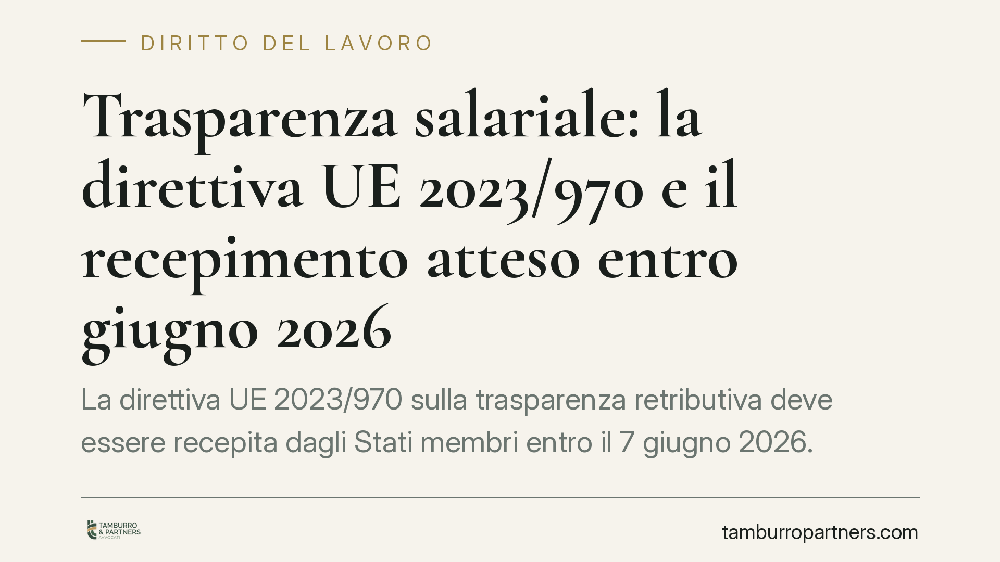

Trasparenza salariale: la direttiva UE 2023/970 e il recepimento atteso entro giugno 2026
La direttiva UE 2023/970 sulla trasparenza retributiva deve essere recepita dagli Stati membri entro il 7 giugno 2026. Introduce diritti informativi per i lavoratori e obblighi di reporting per i datori. Un sondaggio Aidp segnala però che quasi metà delle aziende non dispone ancora di dati concreti sul proprio divario retributivo di genere. Conviene prepararsi per tempo.

Il quadro: cosa è stato deciso a livello europeo
La direttiva (UE) 2023/970 del Parlamento europeo e del Consiglio, adottata il 10 maggio 2023, rafforza l'applicazione del principio di parità retributiva tra uomini e donne attraverso la trasparenza e meccanismi di tutela.
Il termine per il recepimento negli ordinamenti nazionali è fissato al 7 giugno 2026 (art. 34 della direttiva). Si tratta della scadenza imposta agli Stati membri per adottare le norme interne di attuazione: la data di effettiva efficacia delle disposizioni italiane dipenderà dal contenuto del decreto legislativo di recepimento, non ancora pubblicato alla data di questo contributo. Per questo parliamo di direttiva da recepire e non di una norma nazionale già vigente.
Un principio non nuovo, una trasparenza nuova
La parità retributiva non nasce con questa direttiva. È già sancita dall'art. 157 del Trattato sul funzionamento dell'Unione europea (TFUE) e, nell'ordinamento interno, dal Codice delle pari opportunità (D.lgs. 198/2006), che vieta ogni discriminazione retributiva fondata sul sesso.
La novità non è quindi il principio, ma la trasparenza strutturale: finora il divario retributivo poteva restare opaco, difficile da misurare e da contestare. La direttiva impone strumenti che rendono il dato visibile e azionabile.
I parametri concreti della direttiva
Alcuni punti sono già definiti dal testo europeo e fanno da cornice al futuro decreto:
- Diritto all'informazione individuale: i lavoratori potranno richiedere i propri livelli retributivi e i livelli retributivi medi, suddivisi per sesso, delle categorie di lavoratori che svolgono lo stesso lavoro o lavoro di pari valore.
- Divario del 5%: quando il report evidenzia una differenza retributiva media di genere pari ad almeno il 5% in una categoria di lavoratori, non giustificata da criteri oggettivi e neutri, e il datore non vi pone rimedio, scatta la valutazione retributiva congiunta con i rappresentanti dei lavoratori.
- Obblighi di reporting scaglionati per dimensione: la direttiva differenzia soglie e cadenze a seconda del numero di dipendenti (in particolare per le imprese a partire da 250, poi 150 e 100 dipendenti), con tempistiche di avvio e periodicità distinte. Le soglie esatte applicabili in Italia saranno quelle fissate dal decreto di recepimento.
Un aspetto rilevante sul piano processuale: nelle controversie sulla parità retributiva la direttiva prevede l'inversione dell'onere della prova. Spetterà al datore di lavoro dimostrare che non vi è stata discriminazione, non al lavoratore provarla. È un ribaltamento che aumenta sensibilmente il peso della documentazione aziendale.
Perché conta per le imprese
Secondo un sondaggio dell'Associazione italiana per la direzione del personale (Aidp), circa il 48% delle aziende dichiara di non disporre di dati concreti sull'andamento del proprio gender pay gap. È un problema pratico: senza una misurazione affidabile, un'impresa non è in grado né di assolvere i futuri obblighi informativi né di difendersi in caso di contestazione.
Il divario non è solo una questione reputazionale. Con l'inversione dell'onere della prova, la mancanza di dati ordinati e difendibili diventa un rischio legale diretto.
Cosa fare in concreto
- Mappate le retribuzioni per categoria di lavoratori che svolgono lo stesso lavoro o lavoro di pari valore, suddividendo i dati per sesso.
- Definite criteri oggettivi di determinazione e progressione della retribuzione (esperienza, competenze, responsabilità), documentandoli per iscritto.
- Calcolate il divario e verificate se vi siano differenze pari o superiori al 5% prive di giustificazione oggettiva.
- Costruite un archivio difendibile: policy retributive, criteri di valutazione, verbali, così da poter sostenere l'onere probatorio in un eventuale contenzioso.
- Monitorate l'iter del decreto di recepimento per conoscere soglie e scadenze esatte applicabili alla vostra realtà.
È opportuno non attendere la pubblicazione del decreto per iniziare: raccogliere e ordinare i dati retributivi richiede tempo, e le soglie dimensionali coinvolgeranno un numero ampio di imprese.
---
Contributo informativo a cura di Tamburro & Partners - Avv. Giuseppe Tamburro. Non costituisce parere legale.
Ogni storia di lavoro ha i suoi tempi.
Se gestisci HR e vuoi un confronto su contenzioso, ispezioni o licenziamenti, scrivi allo studio. Ti rispondiamo entro un giorno lavorativo.